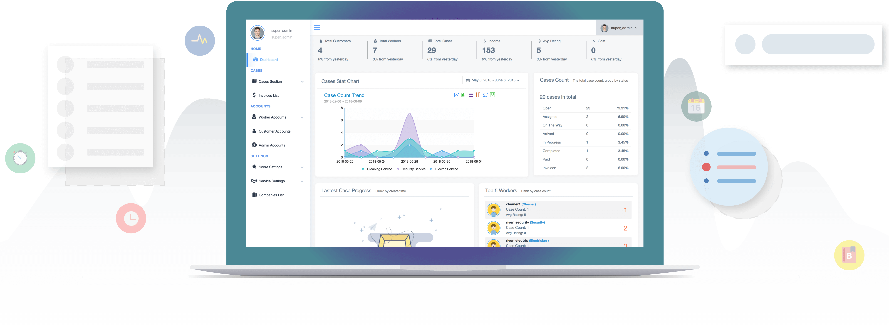

services cube
Management System For Company
Main Features
Dashboard
You can understand various aspects of your business through our full-featured dashboard, including job status and locations, top workers and dealing with open jobs.
Our management system can simplify the tedious parts of work for you, which leaves you with more time and energy to deal with more important work.

Main Features
Services Setting
When it comes to services, it's important for us to provide different types of Services. Whether it is schedule option, or charge option, or service description that will be used in the apps, or UI theme, our primary services settings take full control.
Also, Service price, tax and discounts for each service can all be modified easily according to your needs.
Main Features
Cases Display
All cases / jobs are displayed in three formats: list format, map format and calendar format.
Therefore, our case section not only provide list of cases but also display data in a variety of ways that you can use. It's that flexible and useful.
Main Features
Case Details
Like our mobile apps, admins can also access case details including real-time map, worker info, job progress, job notes, job assets, job reviews and billings.
So basically, we got everything covered for you. You can get all the information about the job by simply looking at this one page.
Main Features
Invoices
Invoices are automatically generated after finishing the jobs. And we make it possible for you to manage your invoices.
By a simple click, admins can generate PDF or print the invoices out easily.
Main Features
Account Management
Accounts data is vital to company. In Services Cube, company admin can view, edit and create both worker accounts and customer accounts.
Accounts contains everthing related to workers or customers such as personal info, case info, score logs, leave logs, credit cart info and certifications, etc.
What's more, it's also possible to monitor all your workers' location on a real-time map.
Main Features
Assets Management
"Service Assets" is like your company's materials management system. You can keep record of the asset name, price, amount and bind services with it so that you can search for inventory status in real-time.
Assets can only be used in the services when you have bound assets with services. Only in this way can the amount of assets changes through the working process and assets panel are displayed in the apps.
Main Features
Notices Management
Services Cube can be used to send notices to your selected workers. Meanwhile, workers are able to give comments to the published notices if they want.
It's instant and also private. You can get your info to specific workers easily and for free with our system.
Main Features
Points Management
Our flexible points system is good for locking up users, strengthening user loyalty and satisfaction.
Also, it can stimulate the productivity of labor forces, explore workers' motivation and effectively reduce the idling of workers.